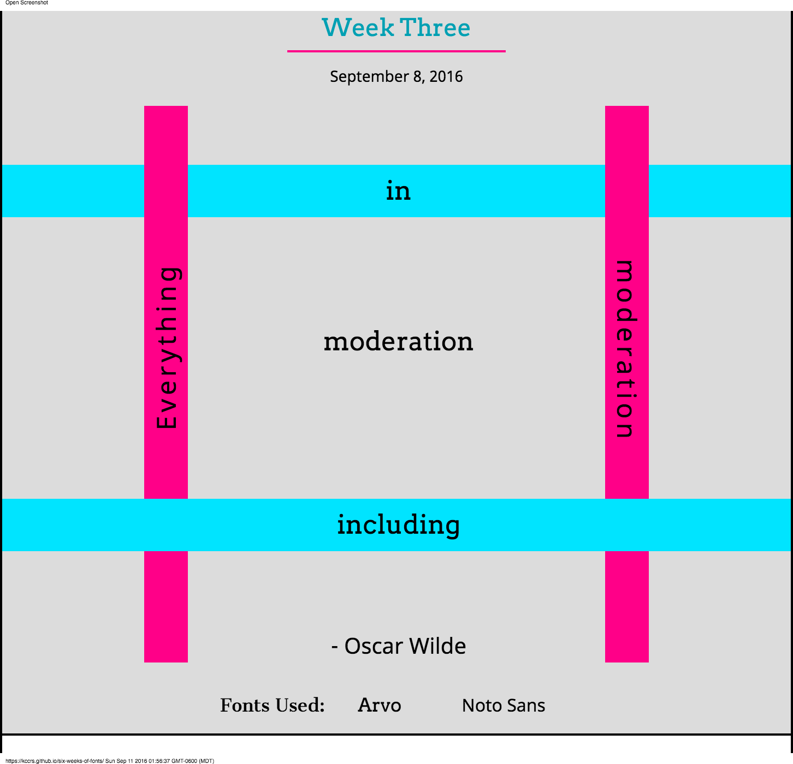

Casey Cross
Front End Web Developer

As a developer I take pride in providing a clean, engaging, and interactive web experience. I use the latest web technologies to ensure your site is useful and accessible. I am passionate about web development and promise to only use my skills for good, not evil. I am a lifelong learner and continuosly strive to learn new languages, frameworks, and tools to enhance my craft.
In my free time, I would like to help teach kids to code, especially kids who are underrepresented in the tech community, such as girls and minorities. I want to give them a leg up into an exciting future. I seek to join a team that encourages growth and collaboration.
When I'm not coding, you can find me camping, reading, watching football, or enjoying all of the cheeses.
Projects
Color Changer
This is a fun little program, especially if you really respond to colors like I do. It reminds me of a remarkable exhibit called Mood Lighting I experienced at the Exploratorium in San Francisco. You place your head inside a large sphere that illuminates with varying colors which you can manually adjust. It was a unique immersive experience that invoked strong emotional reactions. You can check that out here.

This project was completed independently.
Here is the link to the work on GitHub.
Tools Used
Idea Box
This is a site that will store all of your ideas into localStorage. You can also rank your ideas based on their quality. Perhaps your ideas are garbage? If so, you can let everyone know.

This project was a collaboration between myself and Kyle Misencik.
Here is the link to the work on GitHub.
Tools Used
Snake on a Plane
This is a version of the classic game Snake but with a fun nod to the cheese-tastic movie "Snakes on a Plane".

This project was a collaboration between myself and Paul Nguyen.
Here is the link to the work on GitHub.
Tools Used
Pomodoro App
This is one of my favorite projects where we built a functional Pomodoro app to remind us to take meaningful breaks while coding.
This project was a collaboration between myself and Madison Kerndt.
Here is the link to the work on GitHub.
Tools Used
Style Guide
Style guides provide useful design parameters to develop consistent and reusable content containers. These modular elements are responsive and easily adapted into any project. This style guide features design and code samples for creating a responsive drop-down navigation menu, high-impact content cards, accordion tabs, and more.
This project was completed independently.
Here is the link to the work on GitHub.
Tools Used
Font Pairing Challenges
In an attempt to study how fonts can work together to create inventive and coherent design elements, I was inspired by designer Do-Hee Kim's project, "100 Days of Fonts" to create my own, much smaller iteration of this idea.

This project was completed independently.
Here is the link to the work on GitHub.
Tools Used
Getworking
Getworking is a simple networking app to keep track of all the professional contacts you encounter at conferences and meet-ups. It allows you to identify contacts you need to follow up with and was built using React and Firebase.

This project was a collaboration between myself, MaryJane Valade, and David Kerr.
Here is the link to the work on GitHub.
Here is the link to the live site.
Tools Used
Shoot the Breeze
There just aren't enough chat apps in the world, now are there? Don't worry, I've got one for you! Shoot the breeze is built using React and Firebase and allows you a direct private connection between friends, co-workers, enemies, and anyone else you'd like to share your deep thoughts and feelings with.
This project was a collaboration between myself and Jeff Duke.
Here is the link to the work on GitHub.
Tools Used